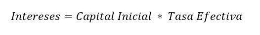
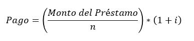
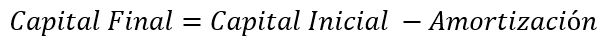

Para poder hacerla tabla de amortizacion por este método primero es necesario calcular
la tasa de interés efectiva. La cual la calculamos dividiendo la tasa de interés
entre 12.

El segundo paso es calcular los intereses del periodo, los cuales los calcularemos multiplicando el capital inicial por la tasa efectiva de interés. 
El tercer paso para construir la tabla de este método sera calcular el pago del periodo usando la siguiente fórmula:  Donde:
- i: Es la tasa de interés
- n: Es el némero de periodos que tenemos para pagar la deuda
Despues calculamos el monto de la amortización restando los intereses al pago y continuando asi con cada uno de los periodos.
Finalmente calculamos el monto del capital final restando el monto de amortizacion al monto de capital inicial. No olvides que el capital inicial del periodo es el mismo monto que el onto del periodo final anterior, con excepción del primer periodo donde será el monto del préstamo. 